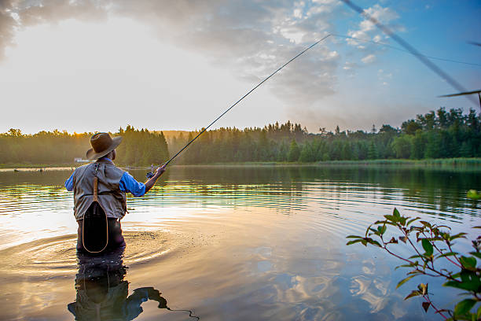
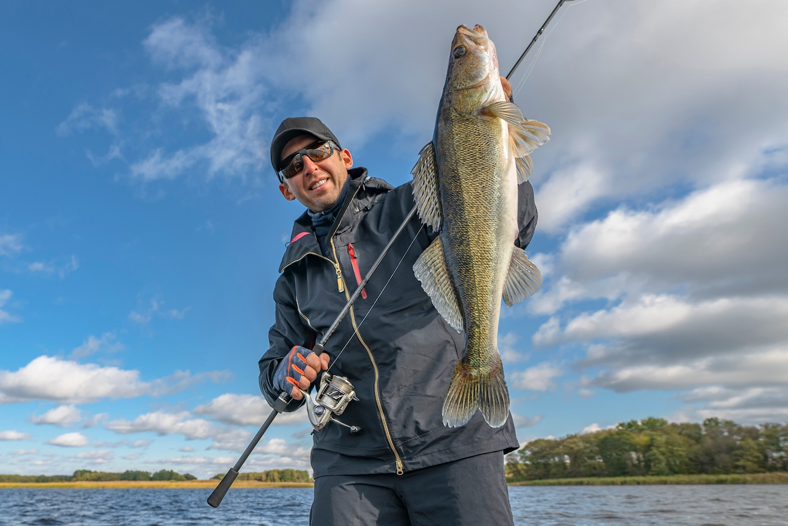
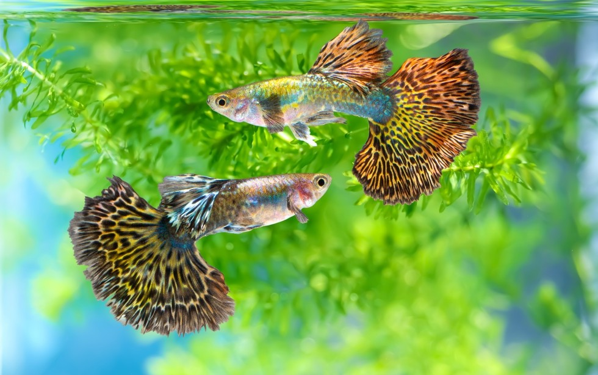
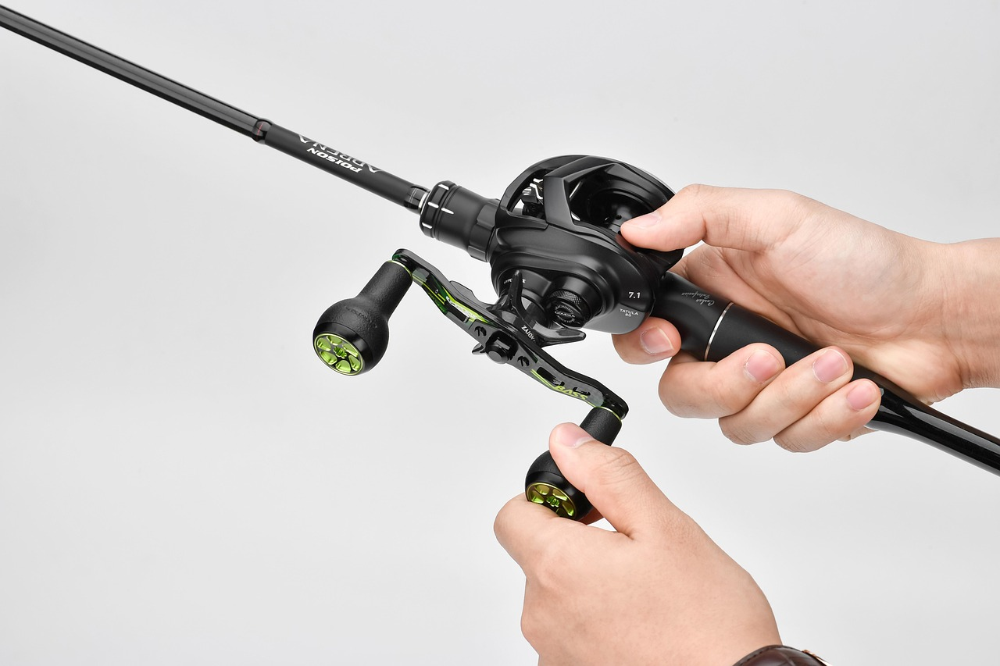
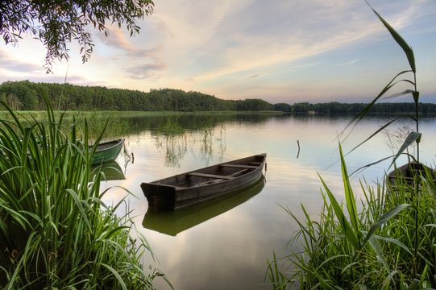
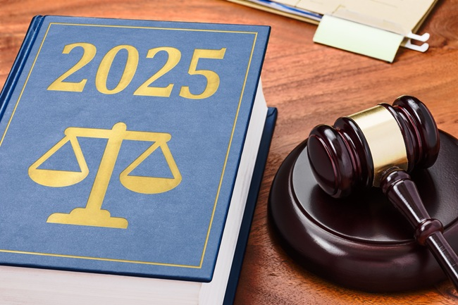
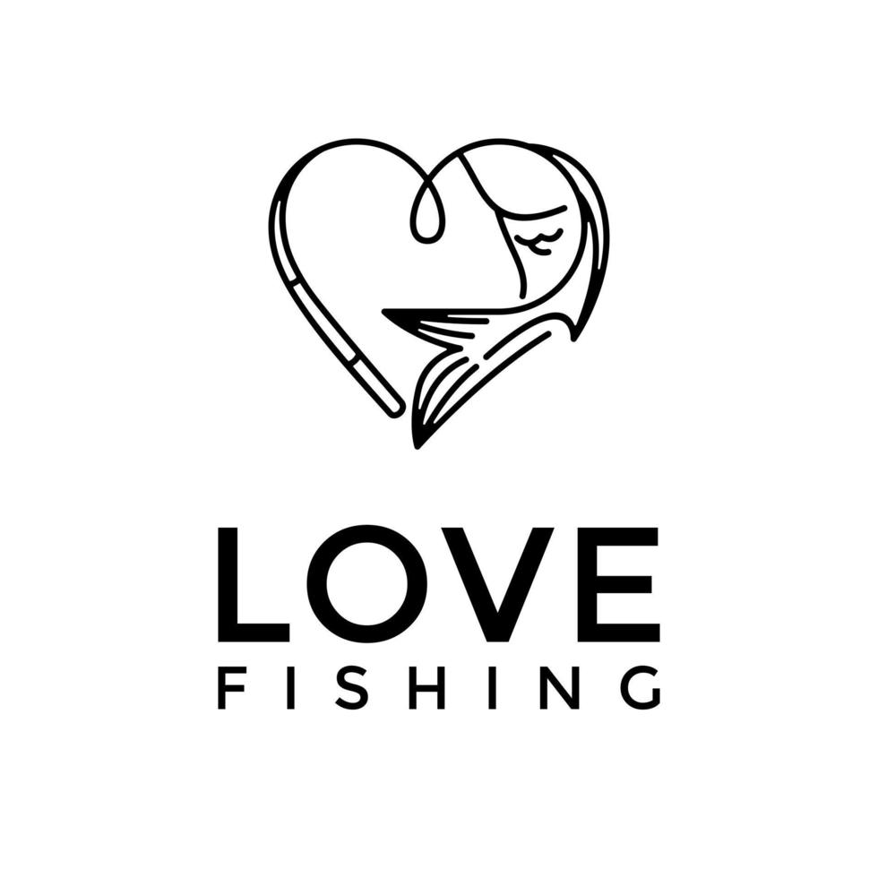

Wędkarstwo to sztuka, spokój i bliskość natury. Hobby dla każdego – niezależnie od wieku.
Spławikowe, spinningowe, gruntowe, muchowe, morskie – każda metoda to inne doświadczenie.
Szczupak, Karp, Sandacz, Sum, Leszcz – Polska ma wiele ciekawych gatunków do złowienia!
Wędki, przynęty, kołowrotki, podbieraki, zanęty – wszystko, co potrzebne w arsenale wędkarza.
Rzeki, jeziora, stawy, morza – każdy znajdzie swoje idealne miejsce do łowienia ryb.
Poszanowanie natury, zasady etyczne, karta wędkarska i zrównoważony połów to podstawa.
Wędkarstwo to nie tylko łowienie – to styl życia, spokój i kontakt z naturą.
